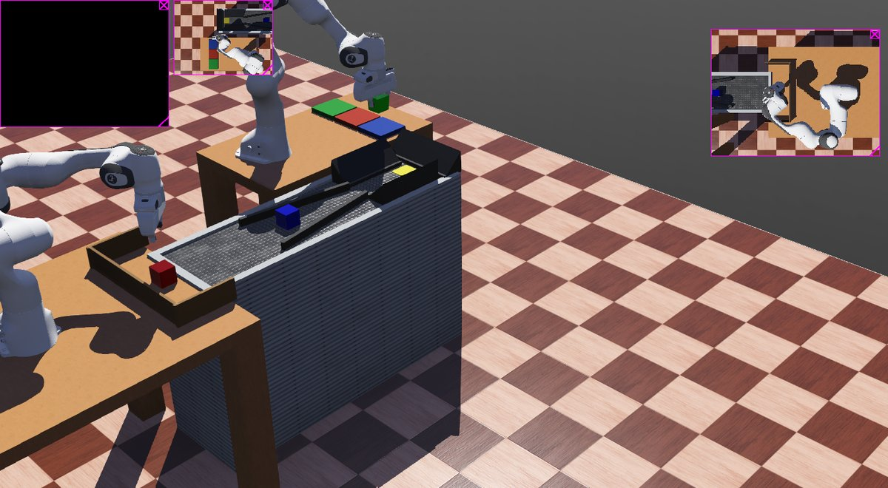
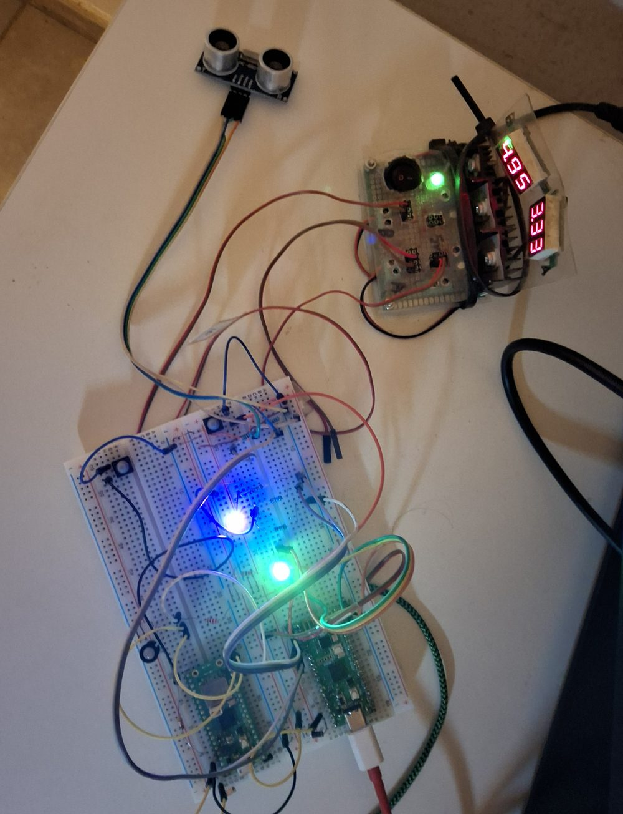

Proyecto personal de robótica · Ría de Gernika
VirtualRobotic
Un aficionado, dos brazos robóticos simulados y un almacén que se lleva solo. Nada de esto es una empresa de verdad — es un proyecto que ha ido creciendo pieza a pieza y que ahora se puede tocar.
Construido con Claude Code (Anthropic).
Origen
De la curiosidad al taller entero
Esto no empezó como un plan de negocio: empezó por querer entender cómo se mueve de verdad un brazo robótico, cubo a cubo, hasta que hacer un buen agarre ya no era suficiente y hubo que resolver clasificación, reposición y pedidos como si fuera un taller real.
Virtual Robotic es el nombre que le hemos puesto a ese taller virtual: dos brazos Panda simulados que cogen, clasifican y entregan piezas sin perder ni una, con visión artificial verificando cada agarre — y algo de hardware de verdad metido de por medio, que se explica un poco más abajo.
Cómo funciona
Tres piezas de una misma celda

Loader & Sorter
Dos brazos que cogen y clasifican
Un brazo carga piezas en una cinta, el otro las recoge y las clasifica por color. Cada agarre se verifica con visión artificial antes de darlo por bueno — si el brazo cree que tiene una pieza que no tiene, se detecta y se corrige solo.
Cinta y bandeja
Reposición sin intervención
La cinta mueve las piezas y una bandeja (shuttle) las acerca al punto justo de agarre. El puesto de trabajo nunca se queda sin piezas: se repone solo, sin que nadie tenga que estar pendiente.
Panel de pedidos
Almacén y trazabilidad
Cada pieza clasificada avisa al instante a un panel web de pedidos: qué se ha pedido, qué falta y qué ya está listo. Si el panel está apagado la celda sigue funcionando igual, solo que nadie apunta la producción en ningún pedido.
Para quien quiera bajar al detalle
Cómo está hecho
No hace falta saber nada de esto para jugar con el proyecto — es solo para quien le pique la curiosidad técnica, contado con el mismo vocabulario de aficionado con el que lo he ido montando.
Simulación
Webots + ROS 2
Los dos Panda, la cinta y la física de los cubos viven en Webots. ROS 2 conecta todos los nodos Python: cinemática de los brazos, cámaras, control del agarre y el panel de mando.
Visión
Verificación por posición real
No basta con que el sensor de los dedos diga "tengo algo": se comprueba también dónde está de verdad el cubo. Si un cubo se pierde o se atasca, se rescata solo en vez de que el robot siga a ciegas.
Almacén
FastAPI + SQLite
El panel de pedidos es un proyecto aparte que solo habla con la celda por HTTP. Tiene sus propios roles de usuario y 76 tests automáticos que comprueban que el stock nunca se reparte por su cuenta.
Dos Raspberry Pi Pico

Una lleva un LED real que indica el color del producto que se está fabricando; la otra, un sensor de proximidad que hace de botón de parada de emergencia. Son un añadido físico, no una pieza del engranaje: si estas dos Pico no arrancan, el resto de la celda funciona exactamente igual.
Los manuales tal cual los uso yo, sin pulir para visitas: cómo arrancar todo, el panel de pedidos y la simulación de los Panda.
Manos a la obra
Juega con él
Con Docker instalado, esto se levanta en tu propio ordenador en un par de comandos. No hace falta tener las Raspberry Pi Pico ni el resto del hardware físico para que funcione.
1 — Levanta el panel de pedidos
2 — Entra en el panel
Abre http://localhost:8000. Usuario de arranque: admin / admin. Cualquier usuario que crees con rol "normal" también entra con la contraseña 1111, pensada justo para dejar que alguien entre a curiosear sin tener que darle una cuenta propia.
3 — Levanta la celda simulada (opcional)
Es un proyecto aparte que se habla con el panel por red — si solo quieres trastear con pedidos y almacén, con el paso 1 te sobra. Los comandos completos (Webots + ROS 2, dos contenedores) están en LANZAR_PROYECTO.md.